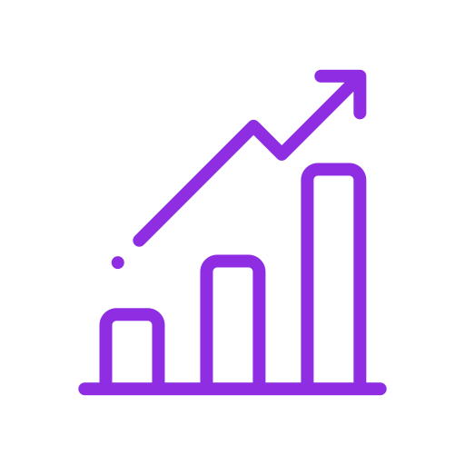

Financial Model is a custom-built model which includes your revenue
projections, expenses, spend on marketing, cost to acquire a customer,
projected balance sheets, startup valuation, allocation and use of funds
stage. Having a reliable financial model is utmost important for your
company and the potential investors.
Our Process
We Write Get on a call with our content expert. Tell us your story, what you are
working on and we will convey it through your pitch deck.
We Design Talk to our designing exerts for design specs. We will ensure that your
pitch deck carries your brand identity and concept.

We Model Talk to our financial experts and get a reliable financial model for your
company.
We Deliver Get your finished Pitch Deck delivered, within 14 business days.
Frequently Asked Questions
Financial Model is a customized built document or model which includes your revenue
projections, expenses of the coming financial years, cost of goods sold, spend on marketing, cost
to acquire a customer, projected balance sheets, startup valuations, and funds required at this
stage.
It is custom-built for each and every startup, as different startups have different business models
and different entrepreneurs have unique plans and strategies to expand and launch.
A financial model is to be only made by an expert because it has to be reliable and based on facts
and market research. You should be able to explain everything to the investor when presenting,
hence before building your financial model it is important that you understand all these concepts
and take the help of a professional.
When you are making the financial projections slide for you pitch decks, you have to inform the
investor how the future looks like in numbers, means your revenue projections, what most
founders do they show a very steep chart of revenue and growth without any research or
calculations at the backend, which is wrong.
You have to show the investor that these numbers are based on facts, reliable calculations, and
market research. You also need to show the investor how you did come to this number, what
would be your CAC- customer acquisition cost, marketing spend, the ask, use of funds, and
valuations. All this is answered through your financial model.
The data that goes into the financial projections slide in a pitch deck is extracted by the financial
model of your startup. The data that goes into the slide is the revenue projections numbers of the
coming 3 to 5 financial years. If you have 2 to 3 or more different business models, products, or
services, you can show revenue projections of each one separately.
Startup financial projections or model is tricky and difficult for the one’s who are new to this field,
Startup projections are based upon the assumptions of the founder or we can say sales target for
revenue projections but at the same time, it has to be realistic and based on facts, hence it
requires market research. Market research tells you the size of the market, the growth rate of the
industry, and the growth of the competitors that are already in the space. Once your revenue
projections are done, you can start off with the expenses and cost of goods sold, for this you
should know budgeting, you have to make a budget for each activity, for example, operationshow
many people do you need for smooth operations, technology- what would be the cost of
building a tech team or product, marketing- you have decided the marketing budget, keeping in
mind the ROI of the industry and what stage you are at, these budgets could also be made
through historical data if present.
Then, once you are done with revenue projections and budgeting, the next step is valuations,
matching balance sheets, preparing an income statement. You can download some ready to use
templates for the internet, but we would recommend going for your unique financial model by a
professional because it is more credible and reliable.
A Financial model is a very crucial and important document for a pitch deck and investors, when
you are in an investor meeting and investors asks you questions about your financial projections,
the ask and use of funds, then your financial model helps you to answer those questions.
The financial model tells you and secondary members like angel investors, venture capitalists,
accelerators, or banks about your startup’s revenue projections, use funds, valuations, cost of
acquisition of a customer, forecasted balance sheets, forecasted income statement, projected
expenses, different budgets, etc.
Ready to start your Project?
We craft powerful pitch decks that get you results!